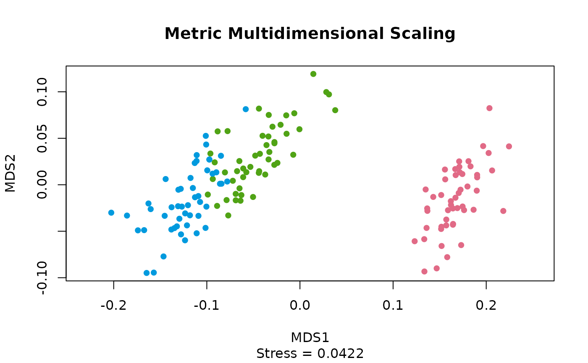

Ordinates samples from their distances, for plotting beta diversity, by
placing them so that their distances on the plot match the distances in
dm as closely as possible, in least squares. Uses the SMACOF algorithm
of scikit-learn's metric MDS(), ported to parallel C that works from dm
directly, with far less time and memory.
Usage
mds(
dm,
n_axes = 2L,
n_starts = 4L,
max_iters = 1000L,
tol = 1e-07,
seed = 0L,
cpus = n_cpus()
)Arguments
- dm
A
distobject, such as frombeta_div()orbray(), or a symmetric numeric matrix of distances. Must not containNAs or negative values.- n_axes
The number of dimensions. Default:
2- n_starts
The number of random starts to run after the start from the PCoA solution, from 0 to 1000. Default:
4- max_iters
The maximum number of SMACOF iterations for each start. Default:
1000- tol
Each start stops once an iteration lowers the raw stress by no more than
toltimes the sum of squared distances on the plot. Default:1e-7- seed
An integer seed for the random starts. Default:
0- cpus
How many parallel processing threads should be used. The default,
n_cpus(), will use all logical CPU cores.
Value
A numeric matrix with one row per sample and one column per
dimension, named "MDS1", "MDS2", etc., as described in "Ordination
result" below. method is "mds"; eig and prop are NA, as metric
MDS has no eigenvalues. Then come:
stress: The stress of the solution, from 0 (a perfect fit) to 1 (no better than putting every point in one place). See "Stress" below.converged:TRUEif the best start stopped because a plain step mettol,FALSEif it stopped atmax_iters.n_iters: The number of SMACOF iterations the best start ran.n_starts: The number of random starts run.best_start: Which start gave the solution:0for the PCoA start, else the random start's number.n_best: How many starts (ofn_starts + 1) ended within 0.1% of the lowest stress.
With fewer than two samples there is nothing to fit: the result has no
columns, stress is 0, and no starts are run.
Details
Which ordination? pcoa(), mds(), and nmds() all fit a
configuration to dm in n_axes dimensions. pcoa() (classical scaling) is exact and fast, has
eigenvalues and "variance explained", but fits the squared distances after
double centering, so large distances dominate, and non-Euclidean
distances such as Bray-Curtis lose part of their structure to negative
eigenvalues. mds() fits the distances themselves, in their own units,
so the plot's distances can be read as the data's, with stress saying
how well. nmds() fits only their rank order, which suits distances
whose values matter less than their order, such as the saturated
Bray-Curtis values of very different samples; it is the usual choice for
community data. mds() and nmds() iterate from several starts and take
longer than pcoa().
Method
Metric MDS minimizes the raw stress
\(\sigma = \sum_{i<j}(d_{ij} - \delta_{ij})^2\), where \(d_{ij}\) are
the distances between points on the plot and \(\delta_{ij}\) the
distances in dm. It does so by SMACOF (de Leeuw, 1977; Borg & Groenen,
2005), as scikit-learn's metric smacof() does: each iteration moves the
points by the Guttman transform, \(X \leftarrow \Gamma(X) =
\frac{1}{n} B(X) X\), which never increases \(\sigma\). A start stops
when an iteration lowers \(\sigma\) by no more than tol times
\(\sum d_{ij}^2\), or after max_iters iterations.
As in nmds() (see there), iterations take relaxed steps,
\(X \leftarrow 2\Gamma(X) - X\) (de Leeuw & Heiser, 1980), when k > 1,
until one makes no more than tol progress, and then plain steps until a
plain step does; n_axes = 1 uses plain steps only, and so does the last
iteration allowed by max_iters. So the returned configuration is a fixed
point of \(\Gamma\) to within tol, at the right scale
(\(\sum d_{ij}\delta_{ij} = \sum d_{ij}^2\)), typically in about half the
iterations that plain steps take. With plain steps only (an internal
setting used by the tests), a start follows scikit-learn's iterations from
the same starting configuration to within rounding error (about
\(10^{-13}\), relatively, in every iteration's raw stress).
SMACOF only finds a local minimum of stress, so, as in nmds():
The first start is the PCoA solution, from
pcoa(). For distances that are Euclidean inn_axesdimensions, PCoA recovers the configuration, and SMACOF stops at once. (An axis without a positive eigenvalue gets small random coordinates instead.)Then come
n_startsrandom starts, with coordinates uniform on [0, 1). On beta diversity distances, a random start sometimes ends with a stress up to a few percent lower than the PCoA start's.The start with the lowest stress is kept; if several tie exactly, the earliest. Its configuration is centered, rotated to its principal axes, and each axis is flipped so that its coordinate with the largest absolute value is positive (the first such sample, if several are within a relative \(10^{-8}\) of it). It is not rescaled: distances on the plot are in the units of
dm.
Stress
The stress reported is
\(\sqrt{\sigma / \sum \delta_{ij}^2}\): the raw stress, normalized by
the distances in dm. It only depends on \(\sigma\), so the lowest
stress is the best fit, and it doesn't depend on the units of dm. It is
1 when all points coincide, and at most 1 after any SMACOF iteration
(max_iters = 0 returns the starting configuration, whose stress can be
higher). Pairs with a distance of 0 in dm, such as duplicate samples,
are pulled towards the same point.
scikit-learn reports \(\sigma\) itself by default for metric MDS, or,
with normalized_stress = True, \(\sqrt{\sigma / \sum d_{ij}^2}\)
(normalized by the distances on the plot instead). For a result x, that
is sqrt(sum((dist(x) - dm)^2) / sum(dist(x)^2)).
Differences from scikit-learn
scikit-learn takes plain Guttman steps;
mds()takes relaxed ones (see above).scikit-learn runs
n_initrandom starts (init = "random", its current default) or one start from classical MDS (init = "classical_mds");mds()runs both kinds, and ranks them by the stress described above.scikit-learn's defaults are
max_iter = 300andeps = 1e-6;mds()'s aremax_iters = 1000andtol = 1e-7.scikit-learn returns the configuration as SMACOF leaves it;
mds()centers, rotates, and flips it, which doesn't change the stress.scikit-learn stops when stress falls by less than
eps;mds()stops when it falls by no more thantol, so thattol = 0stops once stress no longer falls.scikit-learn computes distances on the plot with the expansion \(|x|^2 - 2 x \cdot y + |y|^2\), and replaces distances of 0 by \(10^{-5}\) in the Guttman transform;
mds()computes them directly, and leaves out pairs at distance 0, whose contribution \(r_{ij}(x_i - x_j)\) is 0 either way.The random starts come from
seed, not from R's or NumPy's random number generators, soset.seed()has no effect, and R's random number stream is left untouched.
Speed and memory
mds() shares its C engine with nmds(), without the sorting and the
isotonic regression: dm is read in its own order, once converted to a
plain vector of doubles. Each start running at the same time needs
\(256 n k\) bytes; nothing of size \(n \times n\) is formed, and
there is no limit on the number of samples. Each SMACOF iteration makes one pass over the pairs, which takes
time proportional to \(n^2 k\). Several starts run at once, one per
thread, while one iteration takes under about \(2^{26}\) pairs of work
(\(n\) up to about 11,500); otherwise starts run one at a time, with
each iteration split across cpus threads (for at least \(2^{18}\)
pairs), in parts between checks for user interrupts.
Reproducibility
The result, with all its attributes, is bit-identical from run to run, in
new R sessions, and for any value of cpus, given the same dm, n_axes,
n_starts, max_iters, tol, and seed, for the reasons given in nmds().
dm * 2^p gives exactly the result for dm, times \(2^p\). (As for
every ordination, distances above \(10^{150}\) are rejected.) Results can
still differ in the last bits between computers or compilers, as for any
floating point code.
n_axes larger than \(n - 1\) is reduced to \(n - 1\).
Ordination result
Every ordination function (pcoa(), pca(), rpca(), dbrda(),
capscale(), mds(), nmds(), isomap(), tsne(), umap(), and so
dist_ord()) returns the same kind of
object: a numeric matrix with one row per sample and one column per
axis, so that it can go straight into plot() or a data frame. Rows are
named after the samples, when the input has names. Columns are named
after the method: "PCoA1", "PC1", "RPCA1", "dbRDA1" or "CAP1"
(then "MDS1" for unconstrained axes), "MDS1", "NMDS1",
"Isomap1", "TSNE1", "UMAP1", and so on.
Its attributes always begin with these three, in this order, each with one value per column:
method: The method's ID, e.g."pcoa"or"nmds".eig: Each axis's eigenvalue, on the method's own scale:pcoa()andisomap()give the eigenvalues of Gower's centered matrix (sums of squares);pca()andrpca()give variances, which arepcoa()'s divided by \(n - 1\) for \(n\) samples; anddbrda()andcapscale()followvegan, which also divides by \(n - 1\) when any distance is 4 or more.NAformds(),nmds(),tsne(), andumap(), which have no eigenvalues.prop: The proportion of the total variance (or inertia) that each axis explains. Unlikeeig, it is comparable between methods, so use it to label axes.NAwhere it isn't defined.
Attributes particular to the method follow them. The matrix has class
"ecodive_ord" (as well as "matrix"), only so that print() lists the
other attributes by name rather than in full. Subsetting with [, or
as.data.frame(), gives a plain matrix or data frame without them.
References
de Leeuw, J. (1977). Applications of convex analysis to multidimensional scaling. In J. R. Barra, F. Brodeau, G. Romier, & B. van Cutsem (Eds.), Recent Developments in Statistics (pp. 133-145). North Holland.
de Leeuw, J., & Heiser, W. J. (1980). Multidimensional scaling with restrictions on the configurations. In P. R. Krishnaiah (Ed.), Multivariate Analysis V (pp. 501-522). North Holland.
Borg, I., & Groenen, P. J. F. (2005). Modern Multidimensional Scaling: Theory and Applications (2nd ed.). Springer. doi:10.1007/0-387-28981-X
Pedregosa, F., et al. (2011). Scikit-learn: Machine learning in Python.
Journal of Machine Learning Research, 12, 2825-2830. The C code of
mds() is ported from scikit-learn 1.9.1's sklearn.manifold.smacof(),
under scikit-learn's BSD-3-Clause license (Copyright (c) 2007-2026 The
scikit-learn developers).
Examples
dm <- bray(iris[, 1:4])
ord <- mds(dm)
plot(ord, col = iris$Species)

head(ord)
#> MDS1 MDS2
#> [1,] 0.1690167 -0.025108951
#> [2,] 0.1711458 0.019271351
#> [3,] 0.1902816 0.007971196
#> [4,] 0.1831555 0.019815690
#> [5,] 0.1762013 -0.027267075
#> [6,] 0.1334516 -0.058522704
str(ord)
#> 'ecodive_ord' num [1:150, 1:2] 0.169 0.171 0.19 0.183 0.176 ...
#> - attr(*, "dimnames")=List of 2
#> ..$ : NULL
#> ..$ : chr [1:2] "MDS1" "MDS2"
#> - attr(*, "method")= chr "mds"
#> - attr(*, "eig")= num [1:2] NA NA
#> - attr(*, "prop")= num [1:2] NA NA
#> - attr(*, "stress")= num 0.0422
#> - attr(*, "converged")= logi TRUE
#> - attr(*, "n_iters")= int 17
#> - attr(*, "n_starts")= int 4
#> - attr(*, "best_start")= int 0
#> - attr(*, "n_best")= int 1